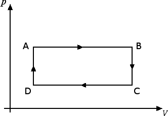

Termodinamica
Trasformazioni cicliche
Le trasformazioni cicliche sono quelle trasformazioni in cui il gas parte da un certo punto del piano di Clapeyron e, al termine della trasformazione, ritorna nello stesso punto. Un esempio è costituito dalla figura seguente:

Il ciclo termodinamico indicato in figura consta di quattro passi: la trasformazione da A a B è un'espansione isobarica (ossia a pressione costante), la trasformazione da B a C è una trasformazione isocora (ossia una trasformazione a volume costante), la trasformazione da C a D è una compressione isobarica, la trasformazione da D ad A è un'altra trasformazione isocora. Il lavoro che viene compiuto nella trasformazione è dato dall'area del rettangolo in figura.
Perché sono importanti le trasformazioni cicliche? Perché abbiamo già visto che un gas, espandendosi a pressione costante, può compiere un lavoro. Evidentemente tale espansione non può però continuare all'infinito, in qualche modo è necessario riuscire a tornare alla configurazione iniziale per riprendere il ciclo.
Sulle trasformazioni cicliche si basa il funzionamento delle macchine termiche. Una macchina termica assorbe una certa quantità di calore Q2. Parte di questo calore viene convertito in lavoro L, il resto è calore ceduto Q1 dalla macchina termica all'esterno.

Ogni macchina termica è caratterizzata da un rendimento r dato dal rapporto tra il lavoro L compiuto e il calore assorbito Q2, ossia r = L / Q2. Dalla conservazione dell'energia possiamo riscrivere il lavoro che la macchina termica è in grado di compiere come la differenza tra il calore assorbito e il calore ceduto: L = Q2 - Q1. Il rendimento r di una macchina termica può essere perciò riscritto come segue: r = (Q2 - Q1) / Q2 = 1 - Q1 / Q2. Questa relazione ci permette di concludere subito che il rendimento di una macchina termica è sempre un numero minore di 1.